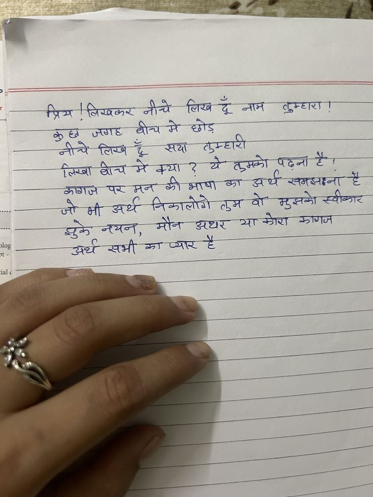

File: hin_sample_24.jpg

प्रिय ! लिखकर नीचे लिख दूं नाम बुकटारी ! बहुत जानते हो इन्होंने बैठे हैं लिखकर बैठे हैं ? ये तुम्हारी लिखन दे ! आपको पर मन में मेरी भाषा का अधिक स्वतंत्रता है जो भी सब के सबकरी तू के मुझको स्विमर दुकान में बान, माँ के अखिर वार जिरा जाए अधर समी का लार है
⚠️ No Output
प्रिय ! लिखकर नीचे लिख दूँ नाम तुम्हारा ! कुछ जगह बीच मे छोड़ नीचे लिख दूँ सया तुम्हारी लिखा बीच में क्या ? ये तुमको पढ़ना है । कागज पर मन की भाषा का अर्थ समझना है जो भी अर्थ निकालोगे तुम वो मुझको स्वीकार मुके नयन, मौन अधर या कोरा कागज अर्थ सभी का प्यार है
| ण+पापिश लिखकर SAA लिख -द जाए ERT कण ——— Say oes आतन्य में आए जा --++ Arte Sa A 7 के = > a Fy Sat मे a 2 ae ea ET Ser To AT oy अरणा ST ST RET हैं a a te Ooty तुम ar ee A z ps OT, eee SI SRT SUT log ce —— a _ ae asf ae So ss a Aiea 2 ne a ae ET 2 ia 7 Se ee a te
Se eT ee ES ल 4, कक al » ee i. मर ee SES ARSE pe es ronan td yt re ae a ee eer Pe Ma ee कप. 5) eae तन मटलनन सन rg mala = SS es | 4 Sg cS ap eae दान आन पननिल न तन त eae | Poot ee ee दा दल य अमन a Sa 3 तन मनन मन Sf Se wen ~ ae : ~ 2 ae won दि सा : an a 7 A a SSS pe ee Se 2-7 SS SE a : a ho ala wis er ae ५422 (खाद जे उठ 7 फट 0, Ae 5 : ee pies eee ae 2 EES ss ak Si. aC AE GE AA ER BIE oO ER ONE eK ge तल SES ARS 2 TE pe Tee pee ea EO BEES ye का SS se es 7 25 os Gar 7S a EEE ca Se लता 3 _ Son en ee) हम 447 87 oT ert at taht See Sadho Bp RA 4 2 Aes PALA AUS EAN og Oe Se 205 Ae lee PRA de eee alia कप मम ध्/यत अल 06: 4 जि 5. SO पट टली डर ee eas tb Yee के पा ee ee A SON ZENE ep ०5 SoM ae 2%, “(ee Joly hue es oC A Re EUs, DIM as ae ee ली ES FRR EAS ECO NR TRE Aiea a 2) Ate 20 002 nero पल RES ahd 20 EE Ae Bertie ae ee eee 2, plan bye aS SS ee x ae 7200 2 Ses oa jee es eee Lee 2 Bese be aces Ar RE Sag Vie IE SeN Ge tos, SR लड़ का 2 EES ao bg a 2k a Spee eto aioe Lah. Mie Si ० पान नि a ++ 22 2:22 eee loa ee ee ee Seng re Se Ra a ne rence 7. ac Vy 3 जाए: AS Rs ee SS प्रो को न = ae ae SAPS eA EN game िक मा का एज Bice Se RE i ONES UN BE Ske oe en es cy aN A os a ae MEE Re ue Se oe 2 es = ता व ee ee कक ली व य मामला आम तय aes = oe = eet ~ | BEM TET UE 8 yay fe eine et Biers wis ८77:-> ARE Ge ae Ee 5 ae mo na mca: ae GE ETE aa oe Oe os हि = So ye Nye eee bose _ WEY ' a ५ a. a ा, 4, a Bo ee a et! —— RN ee TS Z oe acl oe et SN a vie \ we at 5 woe a ८2८ हि 7 oe >> 7 erates _ कं जाओ ne re ae | ee pee wo a ‘ ws - a ee 7 गान | ; : हू : : पल, ey Dee oe : — bee be en लिन ee ons oa uf . See po —_ रॉ a a . eT ‘ ve 5 . 7 = . . oo eee i: wee Bo >> ८८ वश ee — we om : eee pes . : . ee ae
लिख दू जगष् कुम्घारी नीत्चे लिख सथा मन झो भाषा पर लुमवो न्यन,
❌ OCR Failed
आॢता
प्रिय मिस्कर नीचे चिखज दूँ नाम लुकटाठा कुघ जजाह घीच मे छोड़ नी-चे लिसअि यू सयां तुम्हारी लिज्ा गीच मे वया हे ग्रों तुमके पढ़़ाना है। क्जाज षन् गृ क़ीभाषा क अथें रततवब्जहन। है जी भी अर्थ निकालोगे तुम्म वो मुखके स्वीकार जुके नयरो मौन अधार या-क्णा नन्नाबाज गेष् क्व अर्ध खभी का उव्यान् है
प्रिष तिषकर नोचे तिखथूनाम गिर् तुम्हाए। कुछ जगह घीचमे थीच गे छोग तुम्हारी नीवे तियूँ टिव य सया ग्रे तुमकों पढना है। ग्लिमा बीचमेक्य बोच मेक्या कोभाषा क्री त क अर्थसमसाना अर्थ समसाना ग कगज अर्थ परमन पर अर्थ मन निकालोगे तुम वो मुसको स्वीकार जो भ मौन अधर याकोए या केण कगज सुके अर्थसमी नयनः कायार ग क अर्थ सभी